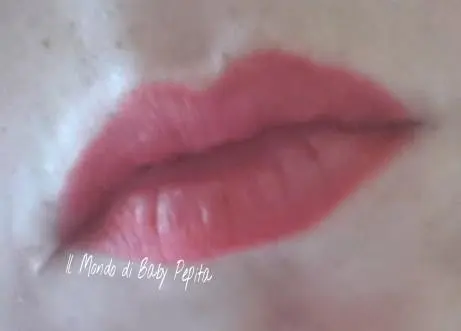
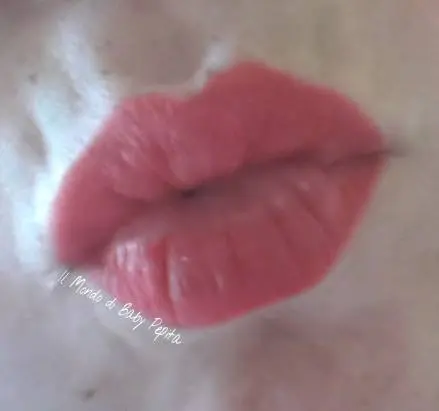

Matita labbra - GD Giorgia Duor Cosmetics
Sapete quando siete in un posto che vi viene una voglia matta di acquistare un prodotto visto su uno scaffale che non viene data nemmeno tanta attenzione?
Ebbene è così successo a me con questo brand.
GD GIORGIA DUOR COSMETICS
Un brand italianissimo di Roma appunto, venduto da un negozietto che vende tutto per la casa e anche qualche cosmetico.
Nemmeno sapevo dell'esistenza di questo marchio ma vedendo una matita labbra da un bel colore con matita retraibile ho voluto provare.
Il sito dice:
GD Giorgia Duor Cosmetics è un marchio che si proietta sul mercato nazionale della cosmetica con un obiettivo chiaro e preciso: soddisfare le esigenze delle donne rispettando gli standard di qualità e convenienza.

Vi dirò io non ho voluto dare aspettative ma solo provare, e invece mi sono ricreduta, è già un annetto che ho questa matita e la preferisco a tante altre
textura: matt morbida

durata: tiene su 5-6 ore tranquillamente senza sbavare
